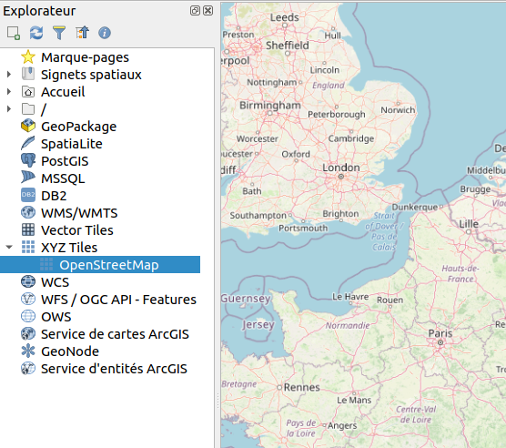
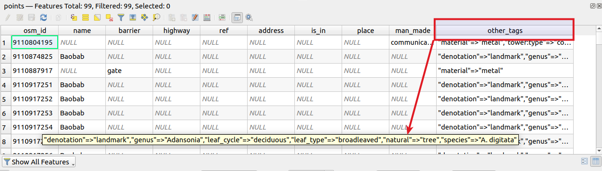
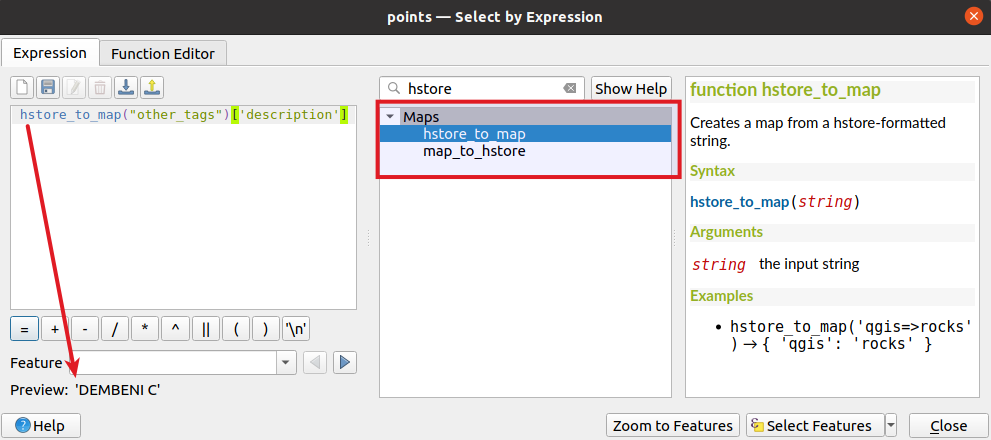
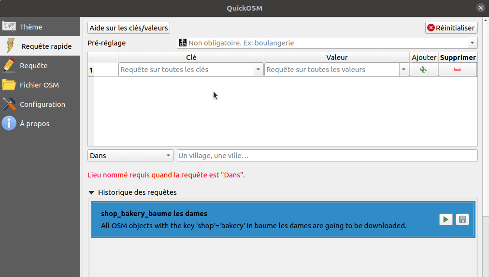
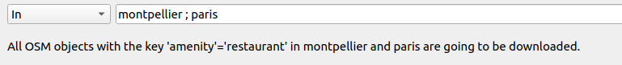
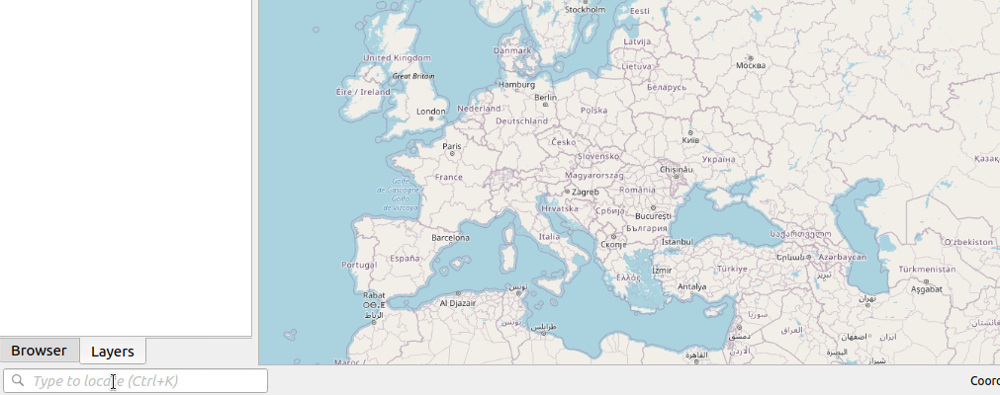

Vector, raster, database, docker, Overpass, tiles and so on …
Which one should I use ?
Etienne Trimaille
OSM vector data, styled like in Google Maps
Another difference ➡ attributes
In GIS, the layer has one or many fields, defining all features in this specific layer
In OSM, the layer does not exist. Each feature is individual and has its own fields.
Therefore
OSM data in QGIS will be differrent from raw OSM data



for selection, labelling ...
A few plugins in the QGIS plugin manager among the 973 plugins available
OpenTopoMap in the background, based on OSM, designed for hiking 🏔
In QuickMapServices, go in Settings ➡ More services ➡ Get contributed pack to enable a lot of basemaps .
other_tags
Bakery
Bäckerei
Boulangerie
shop=bakery
AND
OR
French people love and

Bicycle map, landuse, ... map presets
;

Full changelog https://github.com/3liz/QuickOSM/releases/tag/2.0.0

https://wiki.openstreetmap.org/wiki/Databases_and_data_access_APIs#Database_Schemas
.example.env
.env
make run
Possible to customize the configuration :
layer_styles
This was just a subset of capabilities. There are still other plugins, other ways etc.
Etienne @etrimaille